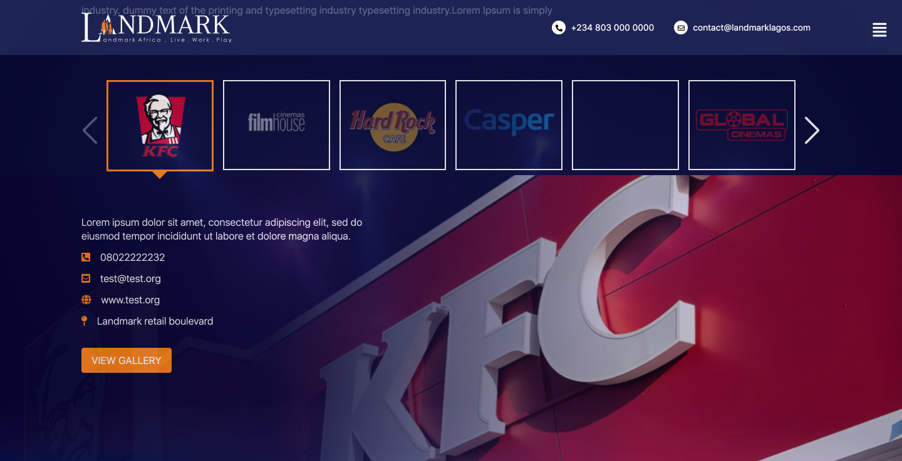

Get Started
Landmark Website template
Written by: Oluwatobi Alonge
Contact: tobylonge@gmail.com
Configuration and Start Project
To get the project started you need to install all the libraries used for this project using:
npm install
You need to have node and npm installed for this to work. For more details visit here
Once installation is done, start the project using:
gulp
Your default browser will automatically open and the project will run automatically on localhost:3000
Folder Structure
build
- css
- documentation
- img
- js
[...all].html
img
js
scss
template
[...all].html
| Folder | Details |
|---|---|
| build Folder | When the html, css and js are written they are compiled into the build folder compressed (smaller size), this will make the pages load faster |
| img | The folder contains all the images used in this project |
| js | Folder contains all the javascript used in this project |
| scss | The project contains all the scss files in this project will are later compiled to css and saved in the build folder. More details about SCSS is found below |
| template | This contains all the general components of the sites like header, footer, modal, etc. The files are compiled into the HTML file which calls them in the build |
| [...all].html | The pages written in HTML example index.html (hompepage), contact.html |
HTML
To refer to general templates like header, footer etc, you can find them in html files written like:
<- header ->
@@include('template/header.html')
<- footer ->
@@include('template/footer.html')
<- Menu ->
@@include('template/menu.html')
<- Modal ->
@@include('template/modal.html')
FONT
Font-awesome font was used, it can be found http://fontawesome.io/icons/
<link href="https://cdnjs.cloudflare.com/ajax/libs/font-awesome/5.13.0/css/all.min.css" rel="stylesheet">
CSS
If you want to make changes to the SCSS files, then you need to understand SCSS, more details here. The libray used is tailwindcss
Modal
All the modals are in a file named modal.html in template folder. To add a new modal, you can copy and paste the code below: here:
<div class="modal" id="modalIdhere">
<div class="modal-dialog">
<header class="modal-header">
Modal Name
<button class="close-modal" aria-label="close modal" data-close>
✕
</button>
</header>
<section class="modal-content">
Add content here:::
</section>
</div>
</div>
To call the new modal, make sure the html page has main.js file called in the script tag, then add:
data-open="modalIdhere"
to the html tag you want to use in calling the modal
Slider
Sliders were added in 2 ways, some inside the HTML and others inside Javascript files because it's happening on click
1. Inside HTML
Starting with the main carousels, example of this can be found in index.html, investors-relations.html, hospitality.html, completed-development.html and media.html. To change images for this carousels, you need to change the background images which can be found in a div with class "swiper-slide"

<div class="swiper-slide" style="background-image:url(img/home/imgName.[jpeg,png,svg])">
For the multi view Sliders, example of this can be found in index.html, about-us.html, investors-relations.html you need to look for a img tag in swiper-slide. you can go ahead and change the file path
<div class="swiper-slide">
<!-- other content -->
<img src="img/imgUrl" alt="">
</div>
2. Inside JS
Some sliders are in the JS, only after an event has occured. Example are in development.js and service.js
To change any data you need to look for businessInfo which is an array of objects. the data is explained below:
id: 1,
bImg: "img/development/LMV33.jpg",
title: "Enjoy the Cool Breeze of the Atlantic Ocean",
text:
"Landmark Village is a mixed use, state-of-the-art development on a 38,000m2 site along the Atlantic Ocean waterfront in Victoria Island, Lagos. The project will include five individual 9-storey towers and will fully embody Landmark Africa’s “Business.Leisure.Lifestyle” concept. The project is designed to be the first Lagos equivalent of The Rockefeller Centre in New York, Canary Wharf in London, Melrose Arch in Johannesburg and Victoria & Alfred Waterfront in Cape Town.",
items: [
{
src: "https://farm3.staticflickr.com/2567/5697107145_a4c2eaa0cd_o.jpg",
w: 1200,
h: 600,
},
{
src: "https://farm2.staticflickr.com/1043/5186867718_06b2e9e551_b.jpg",
w: 1200,
h: 600,
},
{
src: "https://farm7.staticflickr.com/6175/6176698785_7dee72237e_b.jpg",
w: 1200,
h: 600,
},
],
In HTML, I called the slider on click using the code below:
<div data-slide="1" onclick="getDetails(this)">
| Parameters | Details |
|---|---|
| Id | A unique value that will be added in both HTML (data-slide) and in the JS file (id) |
| bImg | This is where the background img url will be added |
| title | Slider title |
| text | Slder description |
| items | If the slider has a photo gallery, I am using items to call gallery. Photo gallery images can be changed here |
Gallery

For hospitality.html, The image url can be changed in items object of businessInfo variable in service.js
items: [
{
src: "https://farm3.staticflickr.com/2567/5697107145_a4c2eaa0cd_o.jpg",
w: 1200,
h: 600,
},
{
src: "https://farm2.staticflickr.com/1043/5186867718_06b2e9e551_b.jpg",
w: 1200,
h: 600,
},
{
src: "https://farm7.staticflickr.com/6175/6176698785_7dee72237e_b.jpg",
w: 1200,
h: 600,
},
],
For Gallery in career.html, you can change it in the html, the img tag inside gallery-card
<div class="gallery-card">
<img data-src="img/home/event-2.jpg" alt="" class="swiper-lazy">
<div class="swiper-lazy-preloader"></div>
</div>